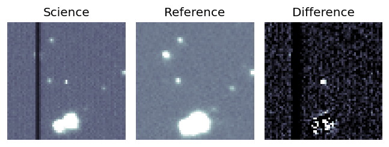
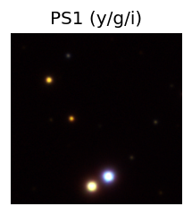
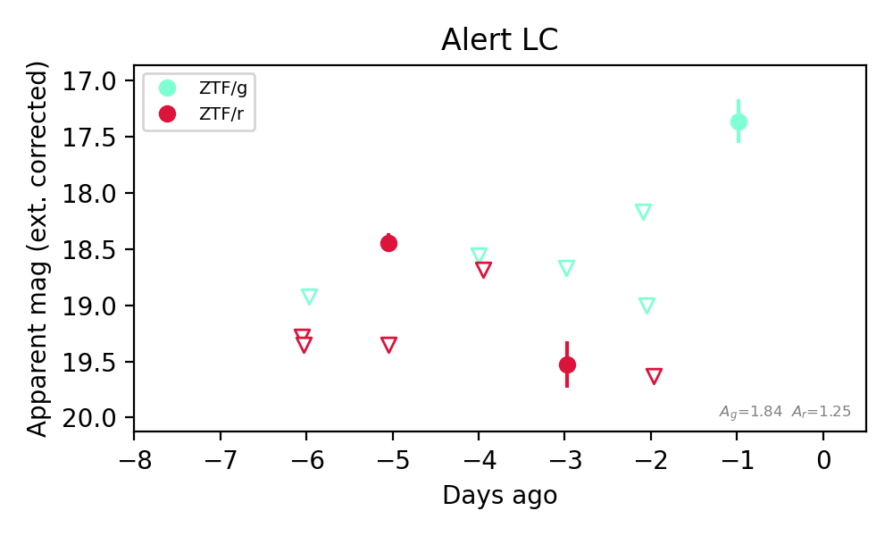

Candidate List 20260924Last night — ZTF: 1,338 passed basic cuts (17 young) · LSST: 0 passed basic cuts (0 young)Previous Day Next Day
Section 1: New Sources (age<1d) Section 2: Old (1-5d) sources observed last nightplaceholder
Section 2: Older Sources Observed Last Night (4)
0. [ZTF] ZTF26abwafvw (FBOT?) [Back to Top] [Share] [Trigger Swift] [Fritz Alert] [Fritz Source] [Lasair]RA, Dec: 273.95735, 42.77599 18h15m49.76s, 42d46m33.55sGalactic (l, b): 70.24161, 24.25288 ext(g-r) = 0.04


TESS: Sectors [ 26 40 52 53 54 74 79 81 119]
PS1: 0 sources in 3 arcsec
LegacySurvey: 1 sources in 3 arcsec Closest: d = 0.69 arcsec, 314.9 deg (east of north) photoz=0.96 (68% bounds 0.76, 1.16), type=REX peak abs mag (ext. corrected) = -25.28 (68% bounds -24.66, -25.78)


Extinction-corrected gr color:
From alerts: -0.43 +/- 0.23 mag
Rise Rate:
g: 1.06 mag/day
r: 0.77 mag/day
Fade Rate:
1. [ZTF] ZTF26abwacec (Afterglow?) [Back to Top] [Share] [Trigger Swift] [Fritz Alert] [Fritz Source] [Lasair]RA, Dec: 288.92824, -4.04148 19h15m42.78s, -4d-2m-29.34sGalactic (l, b): 32.08649, -7.23819 ext(g-r) = 0.708


TESS: Sectors [54 80]
PS1: 0 sources in 3 arcsec
LegacySurvey: 0 sources in 3 arcsec

Extinction-corrected gr color:
From alerts: -0.36 +/- 0.25 mag
Extinction-corrected gi color:
From alerts: -0.42 +/- 0.25 mag
Extinction-corrected ri color:
From alerts: -0.06 +/- 0.22 mag
Consistent with synchrotron, g-r>0!
Rise Rate:
g: 2.94 mag/day
r: 2.78 mag/day
i: 0.79 mag/day
Fade Rate:
g: 0.39 mag/day
r: 0.28 mag/day
i: 0.31 mag/day
2. [ZTF] ZTF26abwqwzc (Afterglow?FBOT?) [Back to Top] [Share] [Trigger Swift] [Fritz Alert] [Fritz Source] [Lasair]RA, Dec: 277.19293, 43.89426 18h28m46.30s, 43d53m39.33sGalactic (l, b): 72.12034, 22.30102 ext(g-r) = 0.046


TESS: Sectors [ 14 26 40 41 53 54 74 79 80 81 118 119]
PS1: 0 sources in 3 arcsec
LegacySurvey: 1 sources in 3 arcsec Closest: d = 1.65 arcsec, 288.7 deg (east of north) photoz=0.33 (68% bounds 0.09, 0.56), type=REX peak abs mag (ext. corrected) = -22.02 (68% bounds -18.79, -23.39)


Extinction-corrected gr color:
From alerts: -0.1 +/- 0.27 mag
Consistent with synchrotron, g-r>0!
Rise Rate:
g: 0.3 mag/day
r: 0.59 mag/day
Fade Rate:
3. [ZTF] ZTF26abxdhvg (Afterglow?) [Back to Top] [Share] [Trigger Swift] [Fritz Alert] [Fritz Source] [Lasair]RA, Dec: 75.99271, 53.46 5h 3m58.25s, 53d27m35.99sGalactic (l, b): 155.30611, 7.29004 ext(g-r) = 0.59


TESS: Sectors [19 59 73 86]
PS1: 1 source in 3 arcsec Closest: d = 2.99 arcsec photoz=0.31+/-1.28 peak abs mag = -23.74
LegacySurvey: 0 sources in 3 arcsec

Extinction-corrected gr color:
From alerts: -0.86 +/- 99 mag
Rise Rate:
g: 1.53 mag/day
r: 0.92 mag/day
Fade Rate:
r: 0.52 mag/day